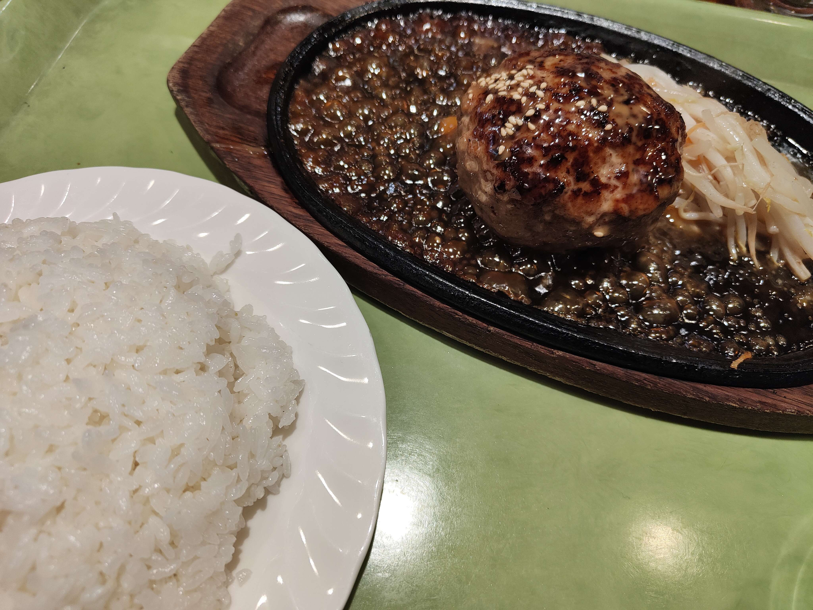
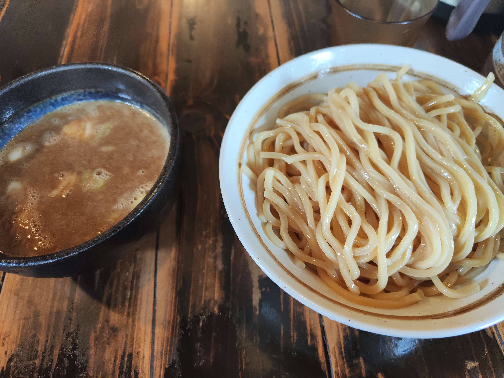

おすすめ

Q'BolaAsere
赤羽駅から徒歩5分。キューバサンドとお酒を楽しめる赤羽のお店です。店内は独特な雰囲気があり、料理に非常にマッチしています。

東京Bamバーグ
本格的なハンバーグが楽しめる素晴らしいお店です。ここでは、豪快なサイズとジューシーな肉汁が特徴のハンバーグが、美味しい料理として提供されています。
はやし田
ここでは、鶏清湯に特化したラーメンを食べることができます。また、サブメニューで出している杯数限定のノドグロのラーメンも非常においしいです。

赤羽京介
赤羽駅から徒歩1分。食べ応え抜群の平打ち麺がおいしいつけ麺がメインのお店。どろりとしたスープの濃厚さは麺と良く絡み、相性が抜群です。
喫茶 暖母
赤羽駅から徒歩6分。喫茶店です。お店の雰囲気も良く、お料理も美味しいです。